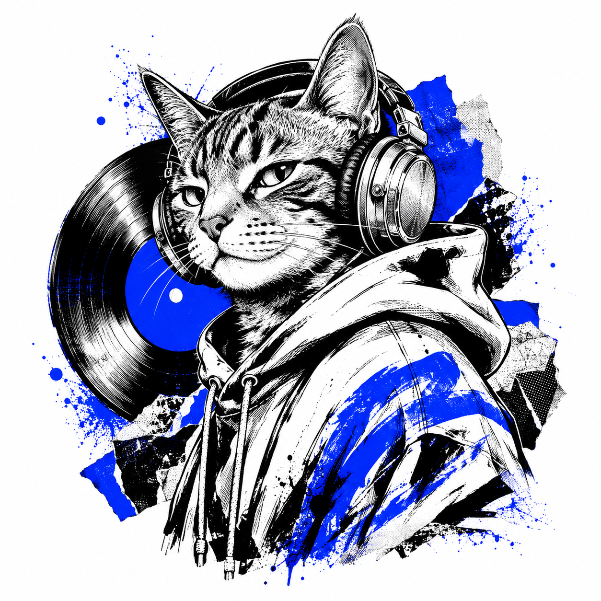
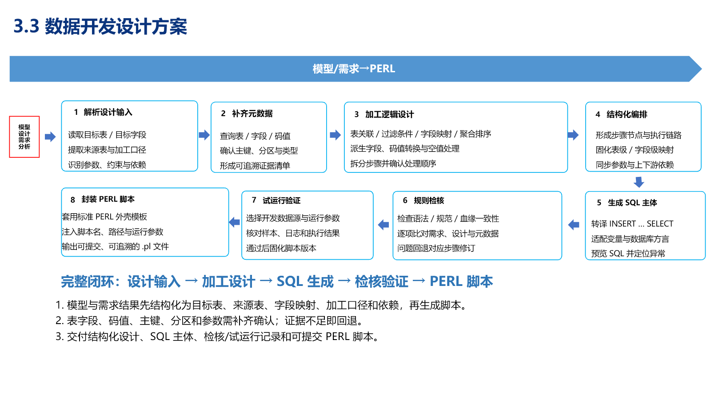

猫哥，
不止一面。
AI 产品 · 生活记录 · 持续生长

最近在写
更多文章 →正在学习
更多技能 →代表作品
更多作品 →
ETL 在线设计平台数据研发 · Web IDE AI 数据研发 CopilotNL2SQL · AI 助手 · Agent
AI 数据研发 CopilotNL2SQL · AI 助手 · AgentJARVIS / COMPANION
陪伴不是回答，
是一直记得。
陪你说话，听见你的每一句 持续进行
安慰你的每个难过瞬间 已完成
记住你提起的每一件小事 已完成
陪你走到不再需要我这件事 尚未完成
只有你的很久不出现，才是我收到的任务完成通知。JARVIS 已就绪